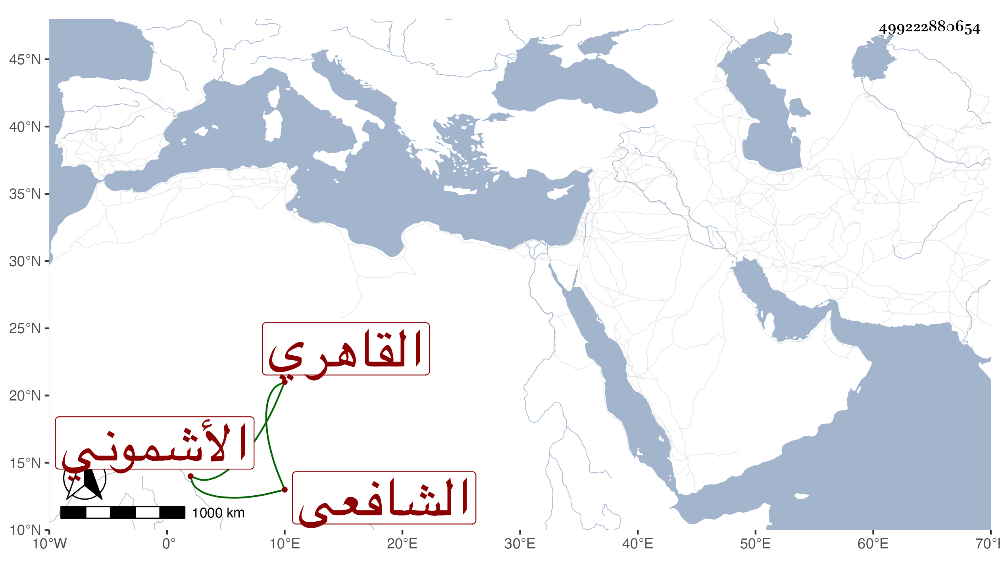

0902Sakhawi.DawLamic.ITO20230111-ara1.EIS1600.499222880654
Biography ID: 499222880654
677
علي بن أبي بكر بن عبد الله بن أبي البركات أحمد نور الدين بن الزين بن الجمال الأشموني ثم القاهري الشافعي ويعرف بابن الطباخ . ولد سنة سبع وسبعين وسبعمائة أو قريبا منه وحفظ القرآن والتنبيه والحلاوي كلاهما في المذهب وألفية النحو وغيرها وعرض على ابن الملقن وغيره وتفقه بالأبناسي والبلقيني وسمع عليه الحديث وبالبدر الطنبدي والولي العراقي وحمل عنه الكثير وبرع في الفقه وأصوله والعربية وسمع الحديث على الزين العراقي والهيثمي والبرهان العداس وابن الكويك والشهاب البطايحي والجمال الحنبلي والشمس الشامي وجماعة . وأجاز له الزين المراغي والجمال بن ظهيرة وطائفة وأذن له غير واحد في التدريس والإفتاء فدرس وأفاد وانتفع به الطلبة وممن أخذ عنه السوهاي والتاج بن شرف وتكسب بالشهادة وولي مشيخة التصوف بمدرسة ابن غراب وكان ابن شرف تلقاها عنه وحدث باليسير قرأت عليه أشياء وكتبت عنه من نظمه ، وكان إماما عالما خيرا دينا متواضعا طارحا للتكلف على طريقة السلف موصوفا بالفضيلة بين القدماء مستحضرا لنوادر وحكايات لطيفة منجمعا عن الناس . مات في ربيع الأول سنة أربع وخمسين رحمه الله وإيانا .
